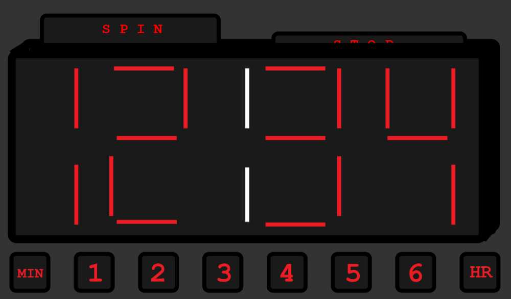

Visualization
I want to improve the visual design of my website. In doing this, I want to reclaim aspects I originally intended to include but didn't because of lack of time. One feature is that I want the border of the clock to be an actual alarm clock, to improve the immersion & theme cohesion. Another, is I want to tie the buttons more into the design by making them behave like physical buttons on the clock. Finally, I want to improve usability, by making only one player’s information on screen at a time, and decreasing visual clutter. I also want to improve the visual look and feel of the numbers on the clock.